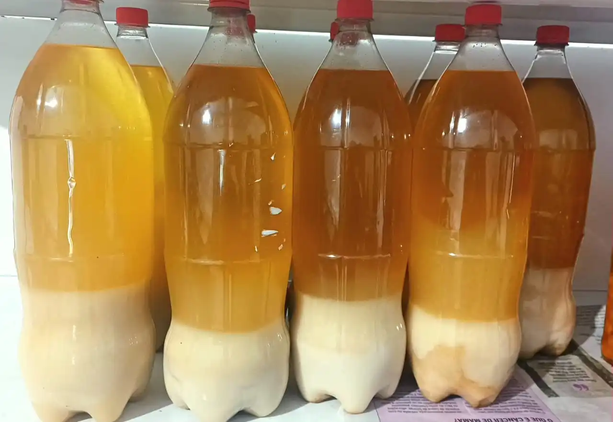
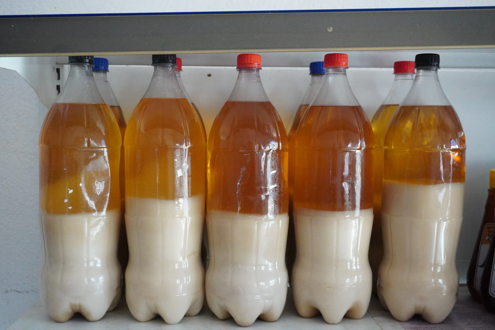
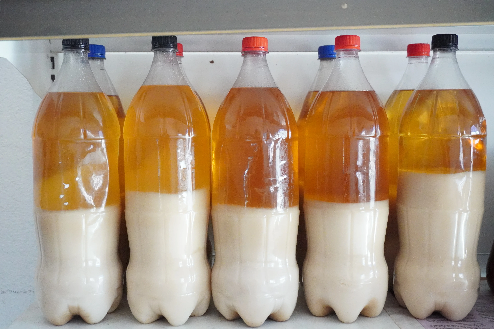

Banha de Porco
Produto artesanal de alta qualidade.
Consultar Disponibilidade e EncomendarRetire na loja: R. Bom Jardim, 379 — Centro, Cáceres.
Banha de Porco: A Gordura Que a Culinária do Interior Nunca Abandonou
Durante décadas, a banha de porco foi a gordura de cozinha mais utilizada nas cozinhas brasileiras — especialmente no interior do país. Com a chegada dos óleos vegetais refinados e das margarinas no século XX, a banha foi indevidamente rotulada como vilã da saúde. Hoje, porém, a ciência da nutrição revisitou essa questão e o cenário mudou: estudos mostram que a banha de porco pura e natural possui um perfil lipídico mais favorável do que muitos óleos vegetais ultraprocessados, sendo rica em ácido oleico (o mesmo gordura saudável do azeite de oliva) e vitamina D em forma biodisponível.
A diferença entre a nossa banha e a que você encontra em alguns supermercados está na origem e no processo. Nossa banha vem do toucinho do porco caipira, criado solto na roça sem hormônios de crescimento ou ração com antibióticos. O processo de derretimento é feito lentamente, em fogo baixo, sem hidrogenação, sem antioxidantes sintéticos, sem conservantes de qualquer espécie. O resultado é uma gordura límpida, de cor levemente amarelada e com aquele aroma inconfundível de banha boa que os mais velhos reconhecem de imediato.
Na culinária caipira, a banha de porco é protagonista. É ela que dá profundidade ao feijão de caldo, crocância irresistível ao frango frito, maciez incomparável à massa do biscoito de polvilho e sabor único ao torresmo de rodeio. Substituir a banha por óleo de soja ou de girassol nesses preparos é perder precisamente o que torna esses pratos memoráveis. Quem cresceu no interior de Mato Grosso sabe que um arroz refogado na banha tem um sabor que nenhum óleo vegetal consegue replicar.
Por ser um produto de safra e produção limitada ao ciclo de criação do porco caipira, a banha pode ter disponibilidade variável ao longo do ano. Por isso, recomendamos consultar o estoque diretamente pelo WhatsApp antes de encomendar. Vale a pena guardar em casa: armazenada em pote fechado e em local fresco ou refrigerada, a banha artesanal dura meses sem perder qualidade. Traga para a sua cozinha a gordura que o campo sempre soube usar com sabedoria.